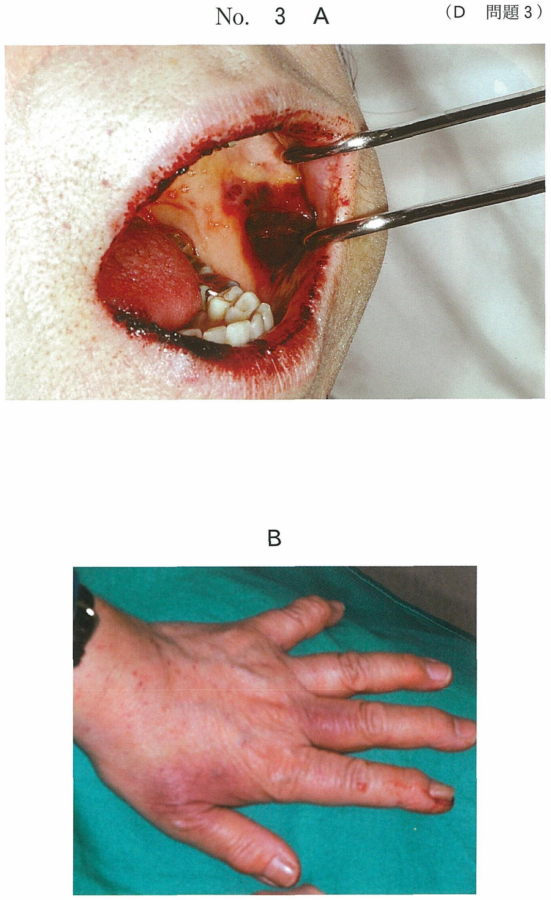
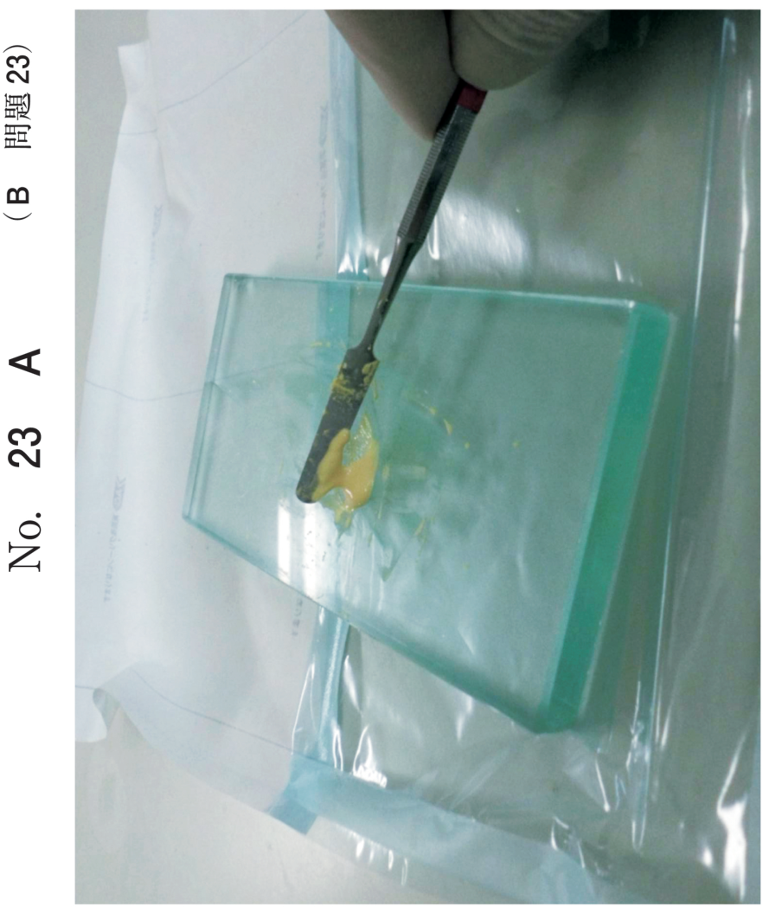
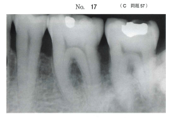
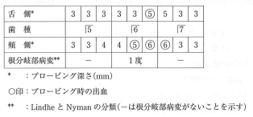

歯根切除術・ヘミセクション
根分岐部病変の分類（Lindhe & Nyman）
| 分類 | 水平方向の破壊程度 | 特徴 |
|---|---|---|
| 1度 | 歯の幅径の1/3以内 | 歯周プローブが根分岐部に入るが貫通しない |
| 2度 | 歯の幅径の1/3を超える | 根分岐部を歯周プローブが貫通しない |
| 3度 | 完全に付着が破壊 | 頬側または舌側から歯周プローブが貫通する |
根分岐部病変の治療法
- 1度：歯周ポケット掻爬術、ファーケーションプラスティ
- 2度：歯周組織再生療法（GTR法、EMD）、ファーケーションプラスティ、トンネリング、歯根分離、ルートリセクション、ヘミセクション
- 3度：トンネリング、ルートリセクション、ヘミセクション、抜歯
歯根の保存療法
ファーケーションプラスティ（根分岐部形態修正）
1度〜2度の根分岐部病変に適用。オドントプラスティ（歯の整形術：エナメル突起などを削除）とオステオプラスティ（歯槽骨整形術）により清掃性を改善する。
トンネリング（トンネル形成）
進行した2度〜3度の根分岐部病変に適用。主に下顎大臼歯が対象。根分岐部を完全にトンネル状に貫通させ、歯間ブラシによる清掃を可能にする。
- 歯根が長く、根分岐部が離開していることが条件
- 根面齲蝕が発生しやすい
歯根分離（ルートセパレーション）
進行した2度〜3度の根分岐部病変に適用。下顎大臼歯が主な対象。歯冠を近遠心的に2分割して連続性を断ち、2本の単根歯として保存する。通常、分割した2根を連結固定する。
歯根の切断除去療法
2度〜3度の根分岐部病変で、保存困難な歯根が1根または2根に限局している場合が適用となる。
歯根切除（ルートリセクション）
| 項目 | 内容 |
|---|---|
| 定義 | 歯冠は削らず歯根のみを根分岐部で切断・除去 |
| 主な対象 | 上顎大臼歯（3根のうち1根を除去） |
| 前処置 | 有髄歯は歯内処置を先に実施 |
| 注意点 | オーバーカントゥアになりやすい、咬合性外傷・破折のリスク |
ヘミセクション
| 項目 | 内容 |
|---|---|
| 定義 | 歯冠を含めて歯根を分割・抜去（歯冠を含む歯根分割抜去法） |
| 主な対象 | 下顎大臼歯（2根のうち1根を歯冠ごと除去） |
| 前処置 | 保存予定の歯根に歯内処置を施す |
| 注意点 | 必要に応じて隣在歯と連結固定 |
トライセクション
上顎大臼歯に行われる術式で、3根から罹患歯根を除去する際、歯冠部も併せて分割し抜去する方法。
- ルートリセクション：歯冠は残す、歯根のみ切除 → 主に上顎
- ヘミセクション：歯冠ごと半分を除去 → 主に下顎
- トライセクション：上顎大臼歯で歯冠ごと1/3を除去
- ルートセパレーション：歯根を分離するが抜去しない → 下顎
過去問
LindheとNymanの根分岐部病変の分類と治療法の組合せで適切なのはどれか。1つ選べ。
b 1度 ーー ルートリセクション
c 2度 ーー 歯周組織再生療法
d 2度 ーー トンネリング
e 3度 ーー 歯周ポケット掻爬
【解説】2度の根分岐部病変には歯周組織再生療法（GTR法、EMD）が適応。1度には歯周ポケット掻爬術やファーケーションプラスティ。歯根分離やルートリセクションは2〜3度。トンネリングは2〜3度だが主に3度。
根分岐部病変の治療で用いられるのはどれか。すべて選べ。
b トンネリング
c ヘミセクション
d 遊離歯肉移植術
e 歯肉弁側方移動術
【解説】根分岐部病変の治療にはGTR法、トンネリング、ヘミセクションが用いられる。遊離歯肉移植術と歯肉弁側方移動術は歯周形成手術であり、根分岐部病変の治療には用いない。
65歳の男性。下顎左側第一大臼歯の歯肉の腫脹を主訴として来院した。1か月前から腫脹があるという。⎿6の歯周ポケットは近心根の頬側と舌側で12mm、他の部位は3mm程度である。初診時のエックス線写真（別冊No.4）を別に示す。
考えられる治療方針はどれか。2つ選べ。

b 歯根分離法
c 根尖切除術
d 意図的再植法
e ヘミセクション
【解説】近心根のみに深いポケット（12mm）があり、近心根周囲の骨吸収が著しい。近心根のみ保存不可能な状態のため、ヘミセクション（近心根を歯冠ごと除去し遠心根を保存）または抜歯が適応。歯根分離法は両根を保存する場合に行う。
65歳の女性。下顎左側大臼歯部の咬合時の鈍痛を主訴として来院した。下顎左側第一大臼歯の根分岐部病変はLindheの分類で3度である。歯周基本治療後の歯周組織検査結果の一部を表に示す。
┌6に対する処置方針で適切なのはどれか。1つ選べ。


b GTR法
c ヘミセクション
d ルートセパレーション
e エナメルマトリックスタンパク質の応用
【解説】Lindhe 3度の根分岐部病変で、歯周組織検査結果から両根とも保存困難と判断される場合は抜歯が適応。ヘミセクションは片方の根が保存可能な場合に行う。GTR法やEMDは主に2度が適応。
52歳の男性。下顎左側第一大臼歯部歯肉の違和感を主訴として来院した。検査の結果、根分岐部病変を伴う慢性歯周炎と診断し、歯周基本治療後に歯周外科治療を行うこととした。初診時のエックス線画像（別冊No.17）を別に示す。歯周基本治療後の再評価時の歯周組織検査結果の一部を表に示す。
適切な処置はどれか。2つ選べ。


b 歯根切除
c トンネリング
d ヘミセクション
e ファーケーションプラスティ
【解説】根分岐部病変の程度と歯周組織検査結果から、歯周組織再生療法（GTR法）とファーケーションプラスティが適応と判断される。両根とも保存可能なため、歯根切除やヘミセクションは選択しない。